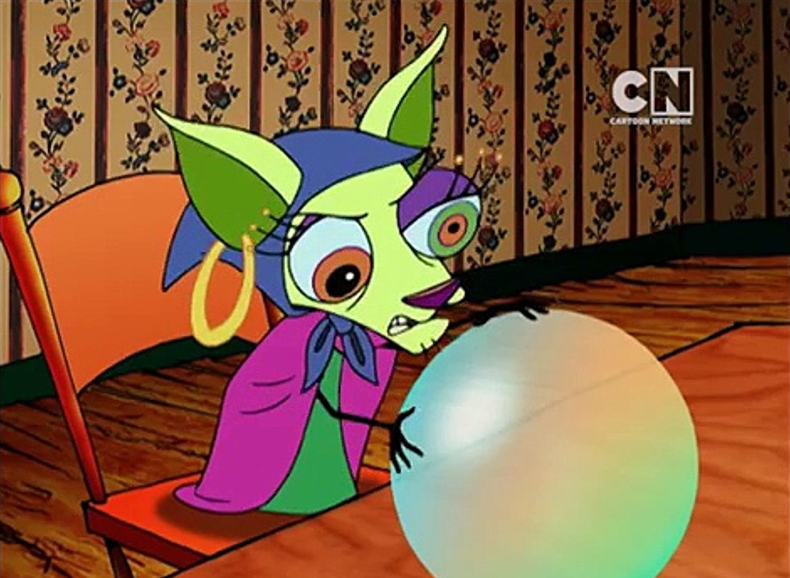

Shirley the medium
Shirley is a woman of both physical and spiritual realms.
- Family: Psychic
- Height: 60 cm
- Mass: 8 kg
- Special powers: Fortune-telling
Shirley is a mystical fortune teller whose primary pastime is casting curses on those who defy morality. She despises the greedy, the wrathful and the inhospitable.